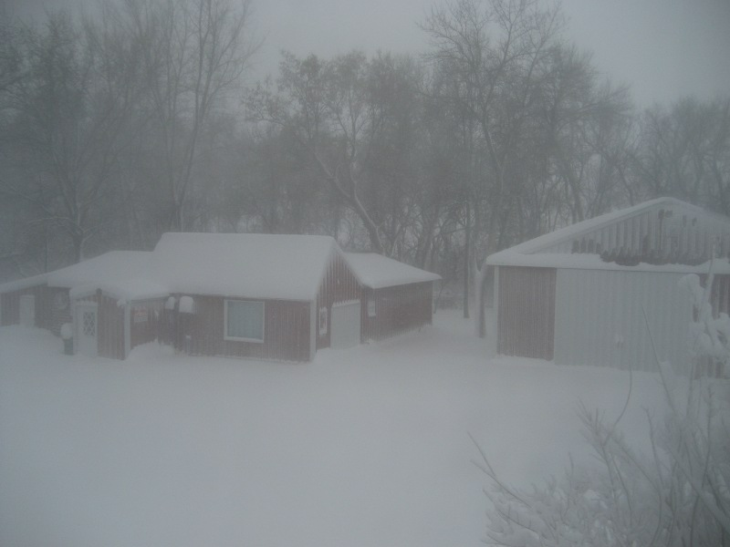
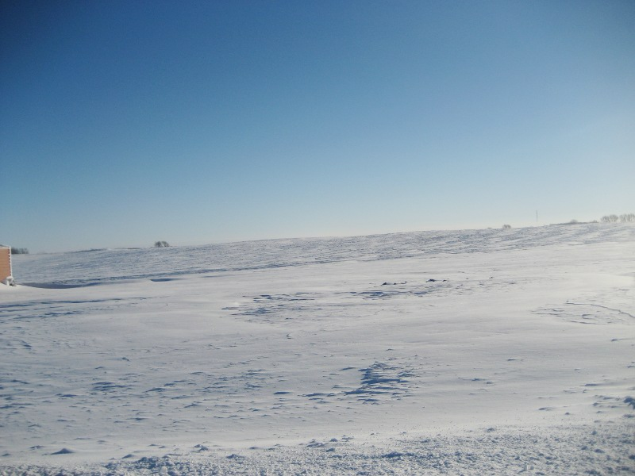

Winter comes to the Minnesota Farm

An old fashioned blizzard came last Saturday and Sunday. First warm moist air blew in from the south and ran into the cold air coming from Canada. The snow came down heavy and the wind blew hard from the South East. Then during Sunday the wind switched to the North West and gusted up to 35 MPH. We were lucky they had predicted gusts over 40 MPH. The temp dropped through the night to 8 below 0 Fahrenheit. You won’t last long outside in weather like that. The good thing is the dropping temperature ended the snow.
I stayed in mostly, took a few pictures outside, and checked that everything was OK. I can’t take the cold like I used to.
It brought back memories of the days when I was a boy. Storms were exciting, if they came during the week you would have days off from school. One of the best things was I was allowed to stay up as late as I wanted. The whole family would be home and during the storm, outside work was held to a minimum. Often we all sit by the kitchen table and play games, read by the gas lamp or just talk.
The wood fire in the kitchen range would be burning at maximum. The draft damper on the back of the stove would click as the wind gusts swept by the chimney. The sound was fascinating, a regular tapping that was completely random. It was like a strange kind of music. I don’t think anyone else ever paid attention to that sound.
In the 1940′s the road through the farm was the main north south highway. It connected the two county seats , Willmar and Olivia. I can remember having people snowed in for the night. The one I remember best was a fellow with a grocery delivery van. He had become stuck on the road by our farm grove and dad pulled his van in the yard with his team of horses. It was war time and many things were rationed. All the fruit and food that could be damaged by freezing were carried into the house for the night.
He was outgoing and full of fun, with a loud laugh. I was given bananas, cherry’s and other goodies to eat, and he encouraged me to eat more of what I liked. When dad would remind us that we should be conserving these good things, he would laugh and say it would all have been lost in the cold if it wasn’t for you, so enjoy. I remember the laughing and talk going on into the night. I think I fell asleep in my mothers lap, I don’t remember. When I awoke the next morning, the storm had ended, the snow plough had come by, and the fellow had left.
Below is a picture early Monday morning. The sun was shinning bright, the air is clear and cold at a minus 9. I always remember it being beautiful after a blizzard. My sister and I would take the sled or shiny scoop shovels and slide on the new drifts.
The work horse’s would be so happy to run free in the barn yard even if it was cold, after being cooped up for a couple of days. They would run,jump, buck and pass gas noisily.

It is so beautiful outside. Sparkling white in the bright sun. One could feel a bit of warmth from the sun and a crisp cold from the air. We had 15 inches of snow but it never lays still on the prairie. The next picture shows my farm field, you can see soil showing through the snow cover. The wind has swept the snow into farm yards, fence lines and road ditches. When the wind blows from a different direction the snow will move again.

I have two more pictures to show. The first shows a job for me . the snow flying off the snow plough lays the mailbox down often. Not serious, just a bit of work, worth it to have the road open. The second one shows why we had a quiet time during the storm. That little amount of snow that stuck to the dish, blocked the TV signal from the satellite very effectively.


{kind=link}
{kind=link}